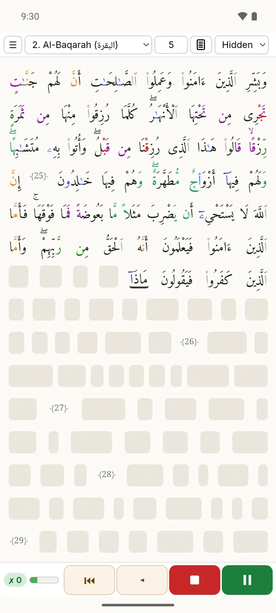
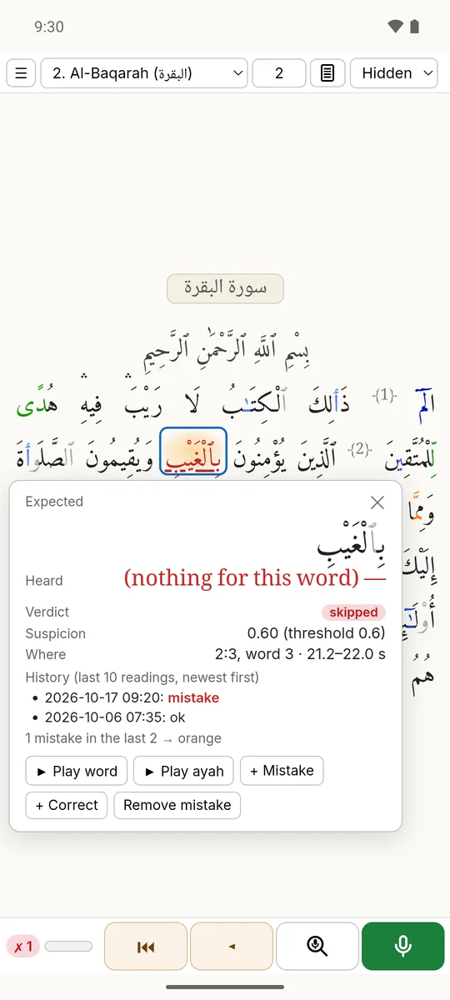
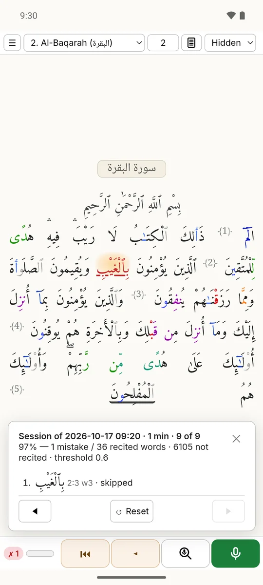
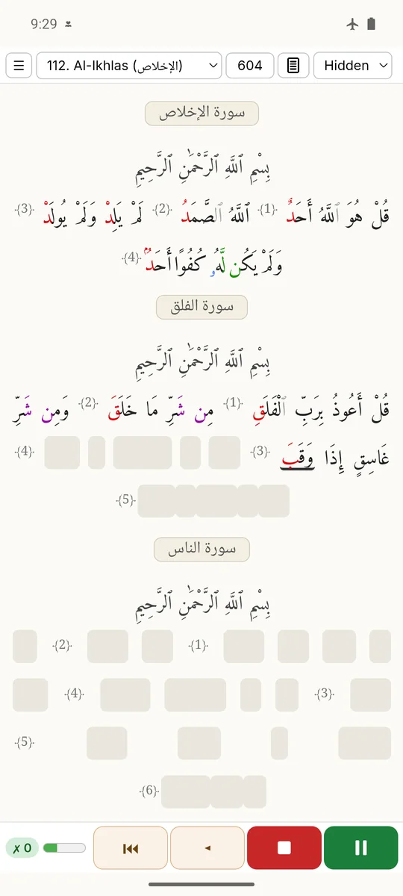
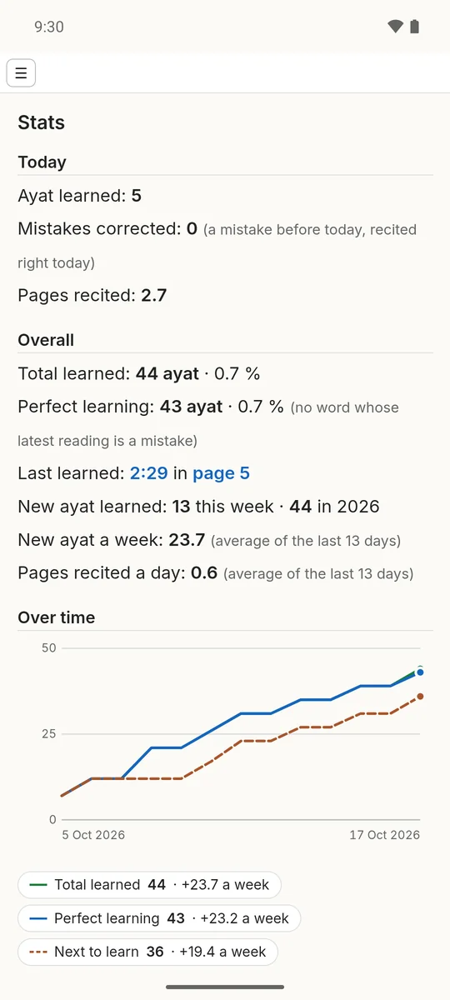
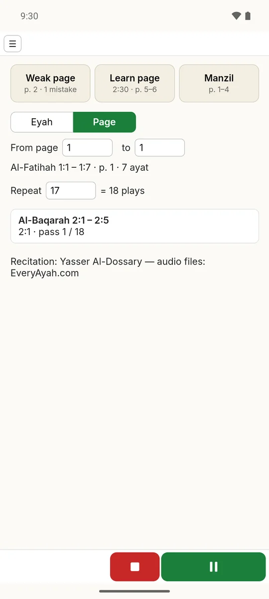

Meddeb
Meddeb listens while you recite from memory, follows you word by word on the Madani mushaf (Hafs an Asim) and marks the words you missed or changed. The speech recognition runs on your own phone, PC or browser: your voice never leaves the device, and there is no account.
The automatic feedback can be wrong: it is help for your practice, not a ruling. Every verdict can be replayed from your own recording and corrected in one tap.
See it in the app






Meddeb 0.12 for Android with a demo profile. Qur'an text: Tanzil Project (CC BY 3.0, unchanged); page layout and tajweed colours: QUL (Tarteel) and Quran.com; see the third-party notices.
Status: the Android app is in testing (download). New (first version, October 2026): Meddeb in your browser, made for Chrome on a computer (Windows, Linux, Mac); nothing to install, about 30 MB at the first visit and the 132 MB speech model at the first recitation, then it also works offline.